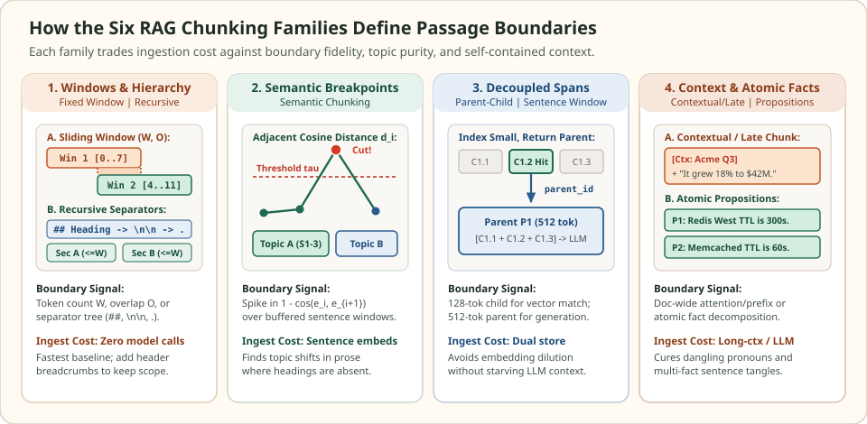

Chunking methods: preserve evidence boundaries before embedding
An exact nearest-neighbor search cannot rescue a passage whose meaning was destroyed before embedding. Chunking is the transformation that maps raw documents into the indexed units of a RAG system. It determines which tokens are pooled into a single vector, which sentences stay together when evidence reaches the generator, and whether entity names, section scope, and table headers survive the cut.
Before tuning an ANN graph or adding a reranker, verify that the corpus chunks actually contain self-contained answers to the queries you care about. Every chunking method below addresses a specific failure mode of naive splitting.
What a chunk must preserve
Let a source document be a token sequence $D = (t_1, t_2, \dots, t_L)$ with document metadata $M(D)$. A chunker produces a collection of indexed passages $\{c_1, c_2, \dots, c_m\}$, where each passage $c_k$ has an embedding representation $e(r_k)$ used for retrieval and a payload text $g_k$ passed to the generator.
In naive chunking, the retrieval unit and the generation payload are the exact same raw span ($r_k = g_k = D[a_k : b_k]$). That single span is pulled in two opposite directions: vector similarity favors short, topically pure spans ($64\text{--}192$ tokens) so unrelated sentences do not dilute the embedding, whereas grounded generation favors longer, self-contained passages ($384\text{--}1024$ tokens) that retain preconditions, qualifiers, and surrounding context.
| Failure mode | What breaks in retrieval or generation | Chunking remedy |
|---|---|---|
| Boundary severing | A two-sentence condition and action are split across Chunk $k$ and Chunk $k+1$ | Sliding-window overlap ($O \ge m-1$) or structure-aware paragraph/heading boundaries |
| Topic dilution | One relevant sentence is averaged with five unrelated sentences, lowering cosine similarity | Semantic breakpoint detection or indexing small child spans linked to parent sections |
| Dangling coreference | Chunk says "It increased by 18% in Q3" while the company name lived in Chunk 1 | Header breadcrumbs, Contextual Retrieval prefixes, or Late Chunking over full-document token states |
| Clause entanglement | A single compound sentence contrasts two systems, causing the generator to swap their attributes | Atomic proposition decomposition with agentic thematic grouping and provenance spans |
Quantify the chunk-size trade-off
Suppose a chunk $c$ combines $m$ sub-passages with unit embeddings $u_1, \dots, u_m \in \mathbb{R}^d$ that are mutually orthogonal ($u_i^\top u_j = 0$ for $i \ne j$). If a query $q$ aligns perfectly with $u_1$ ($q = u_1$) and is orthogonal to the remaining $m-1$ sub-passages, the normalized mean embedding of the combined chunk is:
Merging four unrelated sub-topics into one chunk cuts the cosine similarity of the relevant fact from $1.00$ to $0.50$. On the other hand, setting the window $W$ too small increases the probability that a multi-token evidence span of length $m$ is severed by a window boundary:
This tension explains why modern RAG pipelines move beyond unaligned fixed windows: either they align cuts with structural and semantic boundaries, or they decouple the indexed child span $r_k$ from the returned parent context $g_k$.
Compare the six popular chunking methods
The diagram and table below organize the six core chunking strategies by the signal they use to place boundaries and enrich representations:


Comparison of the six core RAG chunking methods across boundary signal, ingestion cost, and primary failure mode solved.
| Chunking method | Boundary or unit definition | Ingestion overhead | Primary knobs | Failure mode solved |
|---|---|---|---|---|
| Fixed-Size & Sliding Window | Token window $W$ advanced by stride $S = W - O$ | Tokenizer pass only ($O(L)$) | Window size $W$, overlap $O$ | Prevents arbitrary boundary cuts on spans of length $m \le O + 1$ |
| Recursive & Structure-Aware | Ordered separator fallback (headings $\to$ paragraphs $\to$ sentences) | Parser + tokenizer ($O(L)$) | Separator list $\Sigma$, budget $W$, header breadcrumbs | Keeps sections, paragraphs, code blocks, and tables intact |
| Semantic Chunking | Adjacent cosine distance spikes over buffered sentence windows | $N_{\text{sent}}$ embedding calls | Buffer radius $b$, threshold $\tau$ (percentile or $\mu + \gamma\sigma$) | Detects topic transitions in unformatted transcripts and prose |
| Parent-Child & Hierarchical | Small child chunks indexed; parent section or sentence window returned | Dual storage (vector DB + doc store) | Child size $W_c$, parent size $W_p$, merge threshold | Eliminates topic dilution in retrieval while preserving full context for generation |
| Contextual & Late Chunking | Situating prefix injection or full-document transformer attention before span pooling | Prompt-cached LLM prefix or long-context embedder | Prefix length, model context window $L_{\max}$ | Resolves cross-chunk pronouns, implicit entities, and document scope |
| Proposition & Agentic | Atomic, self-contained factual claims grouped into thematic cards | Decomposition + routing model + grounding check | Proposition extractor, card similarity $\tau$, lexical verifier | Separates entangled multi-entity clauses into self-contained facts |
Scroll horizontally to compare the columns. Keyboard: focus the table, then use the left and right arrow keys.
Follow the dedicated chunking method guides
Each guide below opens with a concrete failure example where a simpler splitter breaks retrieval or misleads the generator, illustrates the exact boundary mechanics with a visual diagram, derives the governing equations, and verifies the algorithm in runnable Python code.
Slice token streams with fixed windows and stride overlap, derive boundary-straddling probabilities and index bloat, and verify exact span recovery in Python.
Walk an ordered separator hierarchy from Markdown headings down to sentences, merge atomic blocks up to a token budget, and preserve table headers and section breadcrumbs.
Smooth sentence embeddings with a context buffer, compute adjacent cosine distances, trigger topic breakpoints via percentile or standard-deviation thresholds, and enforce token guardrails.
Decouple small retrieval child chunks from larger generation parent sections, quantify how multi-topic chunks dilute cosine similarity, and deduplicate parent contexts.
Compare Anthropic-style contextual prefix injection against Jina-style late chunking over full-document token embeddings to resolve pronouns, implicit entities, and scope across chunk boundaries.
Decompose compound sentences into atomic decontextualized propositions, group related claims into thematic cards, and enforce provenance and lexical grounding checks.
Evaluate chunking at the span level
When a RAG experiment changes chunk sizes or splitters, chunk IDs change across runs, so ID-based overlap with an old index is meaningless. Instead, define ground-truth evidence as character or token intervals $E(q) = \{[s_1, e_1], \dots, [s_r, e_r]\}$ inside the source corpus and measure span recall and span precision on the assembled context $C(q)$:
Evaluating at fixed token budgets $\sum_{g \in C(q)} |g| \le B_{\text{ctx}}$ prevents a splitter with huge chunks from claiming higher recall@k simply by stuffing $4\times$ more tokens into the prompt.
Check the operating assumptions
If chunk size W = 512 characters works well on English prose, why can it silently truncate JSON or source code?
Embedding models enforce limits in subword tokens, not characters. Punctuation-heavy JSON, URLs, or minified code can average 1.5 to 2.5 characters per token rather than 4, causing a character-based splitter to emit chunks that exceed the embedding model's maximum token length or fragment syntax mid-line.
Does a higher chunk overlap O always improve end-to-end RAG answer quality under a fixed top-k cutoff?
No. When O is large (for example, 50% of W), adjacent windows from the same passage share most of their tokens and receive nearly identical similarity scores. Without span deduplication, the top-k slots fill with near-duplicate windows of one document, crowding out distinct evidence from other documents.
Why can switching from fixed chunks to parent-child chunks change retrieval without re-training the embedding model?
Because each indexed vector now represents a shorter, topically focused child span rather than an average over an entire multi-paragraph section. The embedding model is unchanged, but its input distribution shifts from diluted section averages to specific claim spans.
Sources and next reading
- Chen et al.: Dense X Retrieval: What Retrieval Granularity Should We Use?, EMNLP 2024 (comparing passage, sentence, and proposition granularity).
- Günther et al.: Late Chunking: Contextual Chunk Embeddings Using Long-Context Embedding Models, 2024.
- Anthropic: Introducing Contextual Retrieval, contextual embeddings and contextual BM25.
- MLOps RAG: Chunking Strategies, high-level overview of splitter patterns.